0. Словарь
Прочитай до начала. Если дальше встретишь непонятное слово — возвращайся сюда.
| Слово | Простыми словами |
|---|---|
| Отчёт | Объект конфигурации, как справочник или документ. Его задача — показать данные пользователю таблицей |
| СКД (система компоновки данных) | Механизм платформы, который строит отчёт. Ты даёшь ему запрос, а таблицу, фильтры и итоги он делает сам |
| Макет | Вспомогательный файл внутри объекта. Схема СКД хранится как макет отчёта |
| Схема компоновки данных | Описание отчёта: откуда брать данные и что с ними можно делать |
| Набор данных | Источник данных отчёта. Почти всегда это запрос |
| Поле | Колонка результата запроса: Товар, Приход и т.д. |
| Виртуальная таблица | Из задачи 3.3: таблица регистра, которую платформа считает на лету, например ОстаткиИОбороты |
| Параметр | Из задачи 3.1: значение, которое подставляется в запрос через & |
| Стандартный период | Тип значения «с … по …». Пользователь выбирает его одним полем |
| Выражение параметра | Формула: значение параметра вычисляется из другого параметра |
| Ограничение доступности | Галка «спрятать от пользователя» |
| Настройки | Как отчёт выглядит: колонки, их порядок, фильтры |
| Вариант отчёта | Готовый набор настроек. У одного отчёта может быть несколько вариантов |
| Структура | Из каких частей состоит таблица отчёта |
| Группировка | Объединение строк по полю: все строки одного товара — в одну |
| Детальные записи | Группировка без поля: каждая строка запроса выводится как есть |
| Выбранные поля | Какие колонки увидит пользователь и в каком порядке |
| Отбор | Фильтр: показать только нужные строки |
| Вид сравнения | Как фильтровать: «Равно», «Не равно», «В списке» и т.д. |
| Пользовательские настройки | Параметры и отборы, которые пользователь меняет сам на форме отчёта |
| Подсистема | Раздел интерфейса. Отчёт без подсистемы пользователь не найдёт |
1. Что это, зачем, где найти
Зачем нужна СКД
Представь, что отчёт пишется без СКД. Нужно:
- Написать запрос.
- Создать табличный документ.
- Циклом пройти по результату и вывести каждую ячейку.
- Посчитать итоги вручную.
- Сделать на форме поля для периода и фильтра, передать их в запрос.
Через месяц бухгалтер просит: «А можно ещё колонку и фильтр по складу?» — снова в код.
С СКД ты делаешь только две вещи:
- Говоришь, что взять — пишешь запрос.
- Говоришь, что разрешить пользователю — например, менять период и фильтровать по товару.
Таблицу, итоги, поля на форме и фильтры СКД строит сама. Новый фильтр бухгалтер добавит сам, без программиста. Поэтому почти все отчёты в типовых конфигурациях сделаны на СКД.
Аналогия — сводная таблица в Excel. Запрос — это лист с исходными данными. СКД — сводная таблица поверх него: пользователь сам выбирает, какие колонки показать и что отфильтровать, а исходные данные при этом не меняются.
Две части схемы
Это главная идея задачи. Схема делится на две части, и их нельзя путать:
| Часть | Отвечает на вопрос | Где | Кто меняет |
|---|---|---|---|
| Схема | Откуда данные и что вообще можно показать | Вкладки «Наборы данных», «Параметры» и др. | Только программист |
| Настройки | Как показать сейчас | Вкладка «Настройки» | Программист задаёт начальный вид, пользователь меняет под себя |
Пример: в наборе 5 полей — это схема, больше пользователь не получит. Какие из них выводить и в каком порядке — это настройки, тут пользователь волен.
Как СКД формирует отчёт
Когда пользователь нажимает «Сформировать», происходит по порядку:
- СКД берёт период, который выбрал пользователь.
- Вычисляет выражения параметров: из периода получаются
НачалоПериодаиКонецПериода. - Подставляет их в запрос и дописывает в него условия отборов.
- Выполняет запрос.
- Раскладывает результат по структуре: группировки, детальные записи.
- Выводит выбранные поля в табличный документ.
Держи эту цепочку в голове: каждый шаг из раздела 2 настраивает одно её звено.
Параметр или отбор
Оба ограничивают данные, но работают по-разному.
| Параметр | Отбор | |
|---|---|---|
| Кто пишет в запросе | Ты — &НачалоПериода |
Никто. СКД дописывает условие сама |
| Обязателен ли | Да. Без значения запрос не выполнится или посчитает неверно | Нет. Пользователь включает, когда хочет |
| Что задаёт | Как считать данные | Какие строки показать |
| Пример | Период для ОстаткиИОбороты |
Только товар «Мышь» |
Почему период нельзя сделать отбором. Из задачи 3.3: виртуальная таблица ОстаткиИОбороты считает начальный остаток на дату начала и конечный на дату окончания. Эти даты — её параметры. Отбор работает уже с результатом и не может сказать таблице «считай остаток на другую дату».
2. Как собрать отчёт
Шаг 1. Создать отчёт и схему
Что делаем. Навигатор → «Отчеты» → создать ДвиженияТоваров.
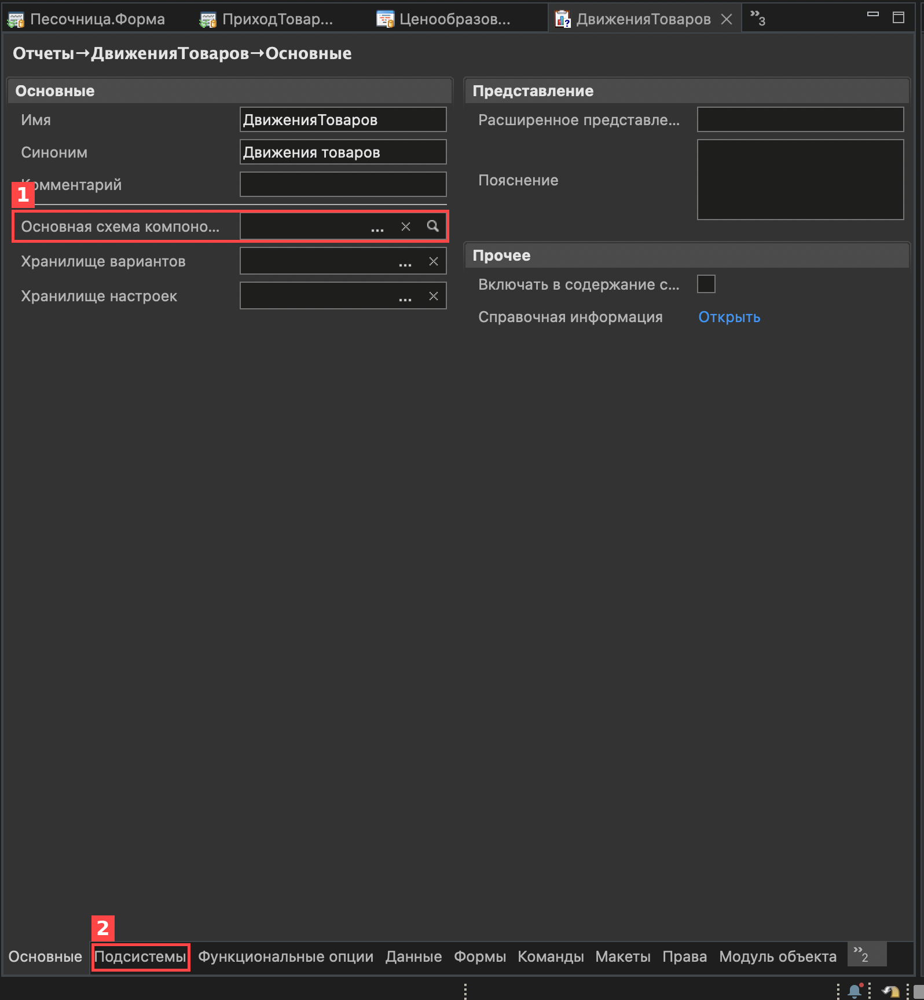
| № | Что это |
|---|---|
| 1 | «Основная схема компоновки данных». Пока пусто — нажми кнопку лупа, EDT предложит создать схему |
| 2 | «Подсистемы» — отметь «Учебная» |
Зачем «основная». Отчёт может хранить несколько макетов. Основную схему платформа берёт автоматически: сама создаёт форму отчёта с кнопкой «Сформировать», полями периода и отбора. Тебе не нужно рисовать форму и писать код формирования.
Зачем подсистема. Подсистема — раздел интерфейса («Главное», «Товары»). Отчёт без подсистемы есть в конфигурации, но пользователь не найдёт его в меню.
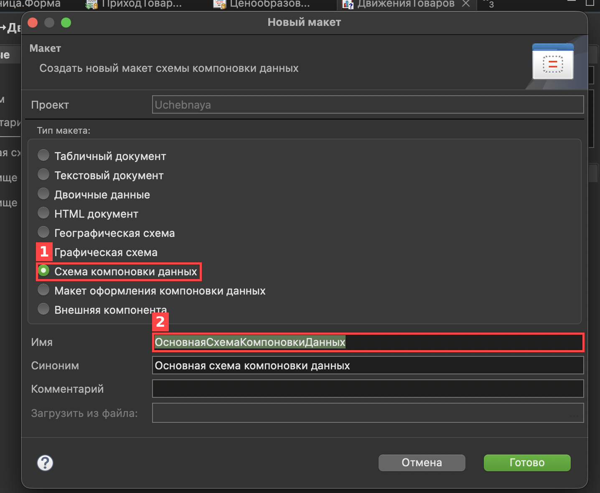
| № | Что это |
|---|---|
| 1 | Тип макета — «Схема компоновки данных» |
| 2 | Имя по умолчанию — не меняй |
Откроется редактор схемы:
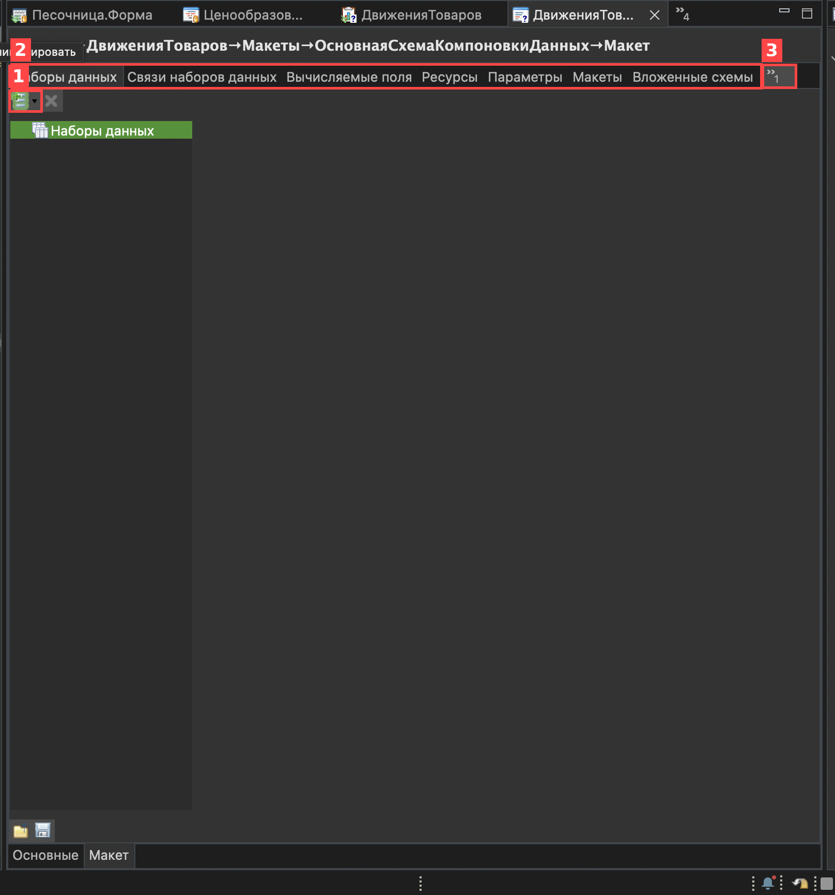
| № | Что это |
|---|---|
| 1 | Добавить набор данных |
| 2 | Вкладки схемы. Для этой задачи нужны три: «Наборы данных», «Параметры», «Настройки» |
| 3 | Если окно узкое, часть вкладок прячется сюда, в том числе «Настройки» |
Шаг 2. Набор данных — запрос
Что делаем. Добавь «Набор данных — запрос» → «Конструктор запроса». Из регистра ОстаткиТоваров возьми виртуальную таблицу ОстаткиИОбороты и перенеси в поля: товар, начальный остаток, приход, расход, конечный остаток. В параметрах виртуальной таблицы укажи &НачалоПериода и &КонецПериода.
ВЫБРАТЬ
ОстаткиИОбороты.Товар,
ОстаткиИОбороты.КоличествоНачальныйОстаток КАК НачальныйОстаток,
ОстаткиИОбороты.КоличествоПриход КАК Приход,
ОстаткиИОбороты.КоличествоРасход КАК Расход,
ОстаткиИОбороты.КоличествоКонечныйОстаток КАК КонечныйОстаток
ИЗ
РегистрНакопления.ОстаткиТоваров.ОстаткиИОбороты(&НачалоПериода, &КонецПериода) КАК ОстаткиИОбороты
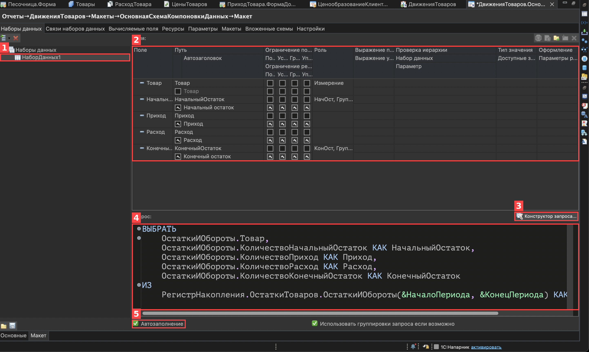
| № | Что это |
|---|---|
| 1 | Набор НаборДанных1 |
| 2 | Поля набора. СКД заполнила их сама из запроса |
| 3 | Конструктор запроса — тот же, что в главе 3 |
| 4 | Текст запроса |
| 5 | «Автозаполнение» — поля набора обновляются сами при изменении запроса. Не выключай |
Чем запрос в СКД отличается от запроса в коде. В главе 3 ты писал Запрос.УстановитьПараметр(...) и Запрос.Выполнить(). Здесь этого нет: запрос выполнит СКД, а значения параметров возьмёт со вкладки «Параметры». Ты пишешь только текст.
Колонка «Роль» (2). СКД сама поняла, что Товар — измерение регистра, а начальный и конечный остаток — остатки. Роли нужны для правильных итогов, разберём в задаче 4.2.
Псевдонимы КАК. Имя после КАК станет именем поля в СКД и заголовком колонки: НачальныйОстаток → «Начальный остаток». Без псевдонима колонка называлась бы «Количество начальный остаток».
Шаг 3. Параметры
Что делаем. Открой «Параметры». СКД уже создала два параметра — из &НачалоПериода и &КонецПериода в тексте запроса.
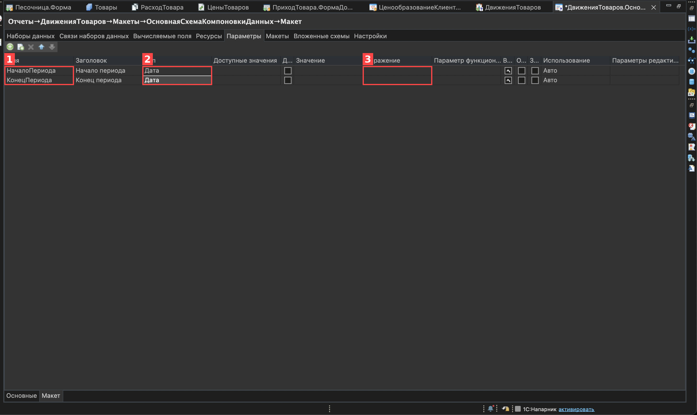
| № | Что это |
|---|---|
| 1 | Параметры из запроса. Имя — как в запросе, без & |
| 2 | Тип «Дата» |
| 3 | «Выражение» пока пустое |
Проблема. Если оставить так, пользователь увидит два отдельных поля: «Начало периода» и «Конец периода». Неудобно: нельзя выбрать «Этот месяц» одним кликом, легко ошибиться с концом дня (см. ловушку 3).
Решение — три действия:
- Добавь параметр
Периодс типом «Стандартный период». Его увидит пользователь. - Даты для запроса вычисли из него через выражения.
- Сами даты спрячь.
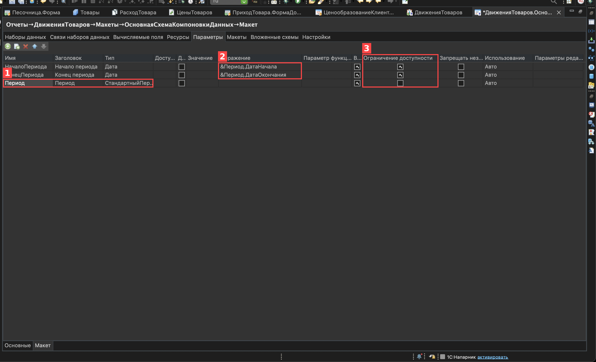
| № | Что это |
|---|---|
| 1 | Новый параметр: имя Период, тип «Стандартный период». Имя должно совпадать с тем, что пишешь в выражениях |
| 2 | Выражения: &Период.ДатаНачала и &Период.ДатаОкончания |
| 3 | «Ограничение доступности»: у дат галка стоит, у Период — нет |
Что такое стандартный период. Это значение из двух дат. У него есть свойства ДатаНачала и ДатаОкончания — как у товара есть Цена. Если пользователь выбрал «01.08.2026 – 31.12.2026», то:
| Свойство | Значение |
|---|---|
ДатаНачала |
01.08.2026 0:00:00 |
ДатаОкончания |
31.12.2026 23:59:59 |
Конец периода — конец дня, поэтому движения последнего дня попадут в отчёт.
Как работает выражение. Перед выполнением запроса СКД читает выражение &Период.ДатаНачала, берёт значение параметра Период, достаёт из него дату начала и кладёт в НачалоПериода. Ты не пишешь ни строчки кода.
Зачем ограничение доступности. Значения дат теперь вычисляются из периода. Если пользователь увидит их отдельно и поменяет — получится путаница. Галка прячет их из всех настроек пользователя.
Шаг 4. Настройки: структура
Что делаем. Открой «Настройки».
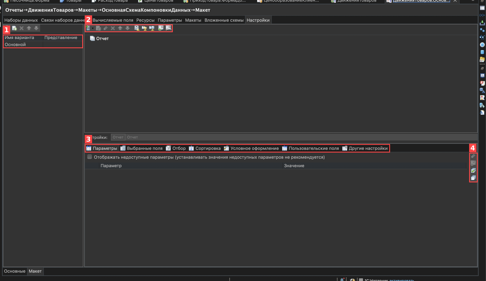
| № | Что это |
|---|---|
| 1 | Варианты отчёта. Пока один — «Основной» |
| 2 | Кнопки структуры. Первая — добавить элемент |
| 3 | Настройки выделенного элемента структуры: параметры, выбранные поля, отбор, сортировка, оформление |
| 4 | Кнопки пользовательских настроек |
Что такое структура. Это план таблицы: как разложить строки запроса. Пока в структуре только корень «Отчет», СКД не знает, как выводить строки, и отчёт будет пустым. Нужно добавить хотя бы один элемент.
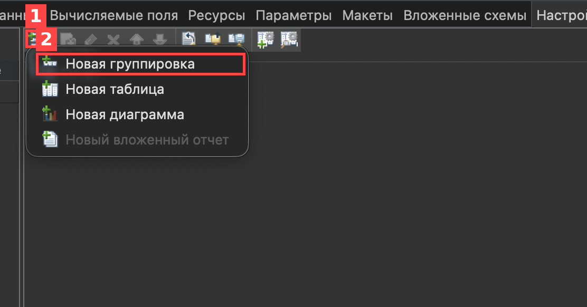
| № | Что это |
|---|---|
| 1 | Кнопка добавления |
| 2 | «Новая группировка» |
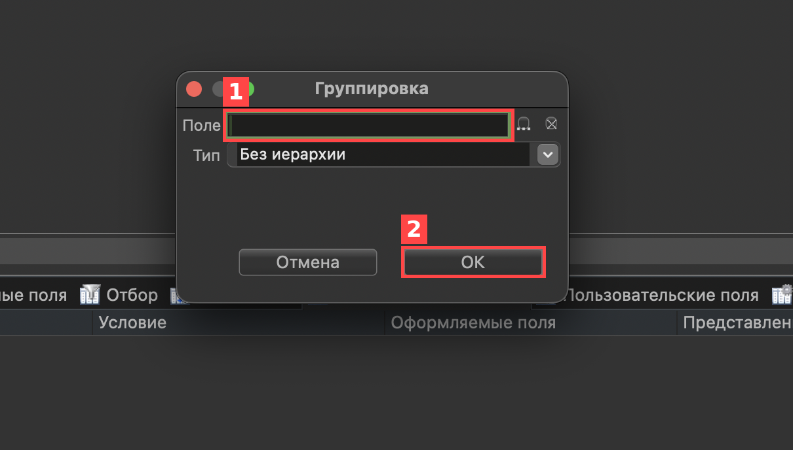
| № | Что это |
|---|---|
| 1 | «Поле» оставь пустым |
| 2 | «ОК» |
Группировка с полем и без поля. Допустим, запрос вернул три строки движений:
| Товар | Приход |
|---|---|
| Мышь | 10 |
| Мышь | 20 |
| Ноутбук | 5 |
- Группировка по полю
Товарсольёт строки одного товара: «Мышь — 30», «Ноутбук — 5». - Группировка без поля — детальные записи — выведет все три строки как есть.
В нашем запросе ОстаткиИОбороты уже возвращает по одной строке на товар, поэтому детальных записей достаточно. Группировки с полями — в задаче 4.2.
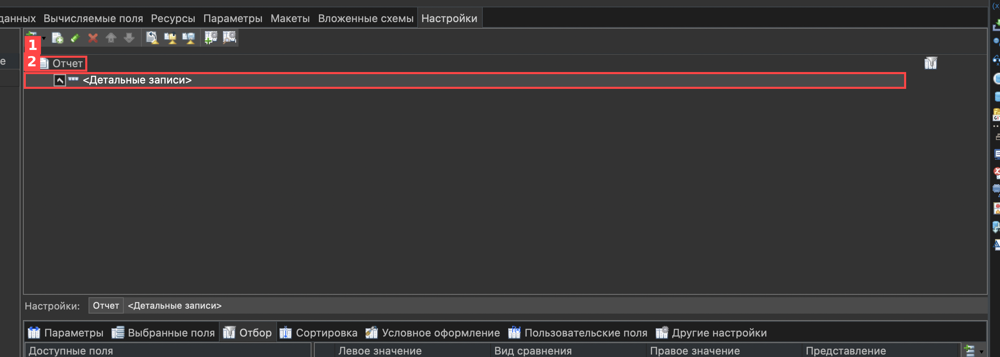
| № | Что это |
|---|---|
| 1 | «Отчет» — корень структуры |
| 2 | «Детальные записи» внутри него |
Шаг 5. Настройки: выбранные поля
Что делаем. Выдели «Отчет» → вкладка «Выбранные поля». Перенеси поля в нужном порядке.
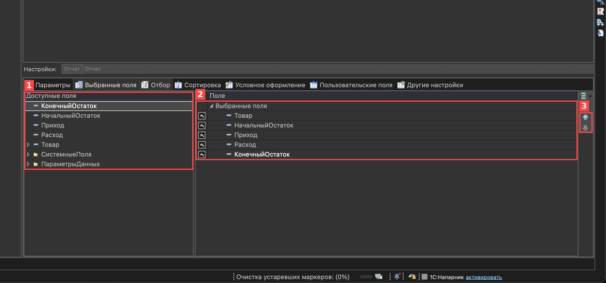
| № | Что это |
|---|---|
| 1 | Доступные поля — всё, что дал набор данных |
| 2 | Выбранные поля — колонки отчёта. Порядок здесь = порядок колонок |
| 3 | Стрелки — поменять порядок |
Почему на «Отчет», а не на «Детальные записи». Настройки корня действуют на весь отчёт. Если позже добавишь группировки, они возьмут эти же поля. Настраивать поля у каждого элемента структуры нужно только в особых случаях.
Почему не всё сразу. В доступных полях есть ещё СистемныеПоля и ПараметрыДанных — служебные. Пользователю они не нужны.
Шаг 6. Пользовательские настройки
Что это. Всё, что ты настроил на вкладке «Настройки», — это настройки варианта. Пользователь их по умолчанию не видит и не меняет. Чтобы период и товар появились на форме отчёта, их включают в пользовательские настройки. Делается это кнопкой:
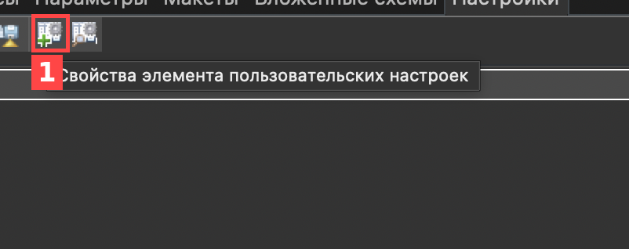
| № | Что это |
|---|---|
| 1 | Кнопка. Нажимаешь, когда выделена строка параметра или отбора |
Период. «Настройки» → «Параметры» → галка у Период → кнопка.
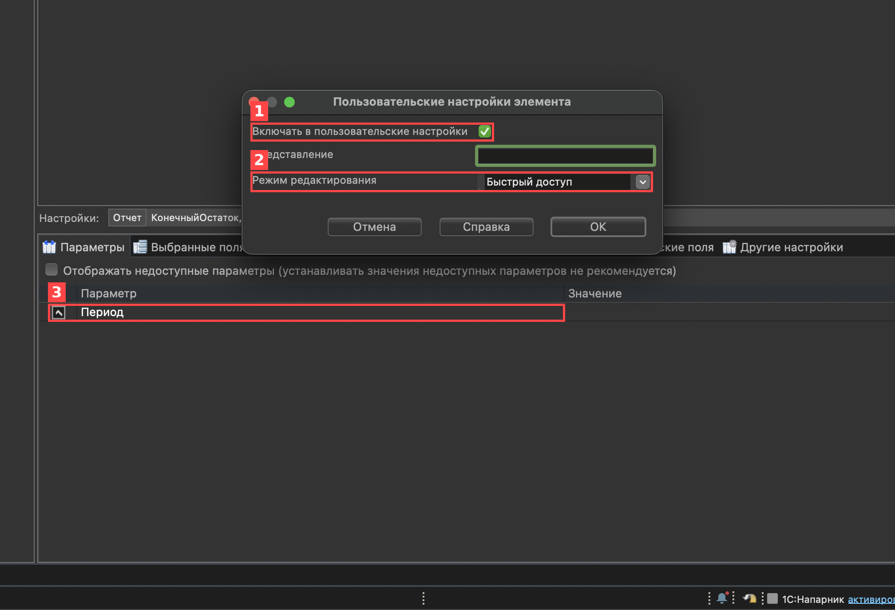
| № | Что это |
|---|---|
| 1 | «Включать в пользовательские настройки» — галка |
| 2 | «Быстрый доступ» — поле видно прямо на форме отчёта |
| 3 | Строка Период |
Галка у Период в списке параметров значит «использовать значение». Значение можно не задавать — его выберет пользователь.
Товар. «Настройки» → «Отбор» → перенеси Товар вправо → кнопка.
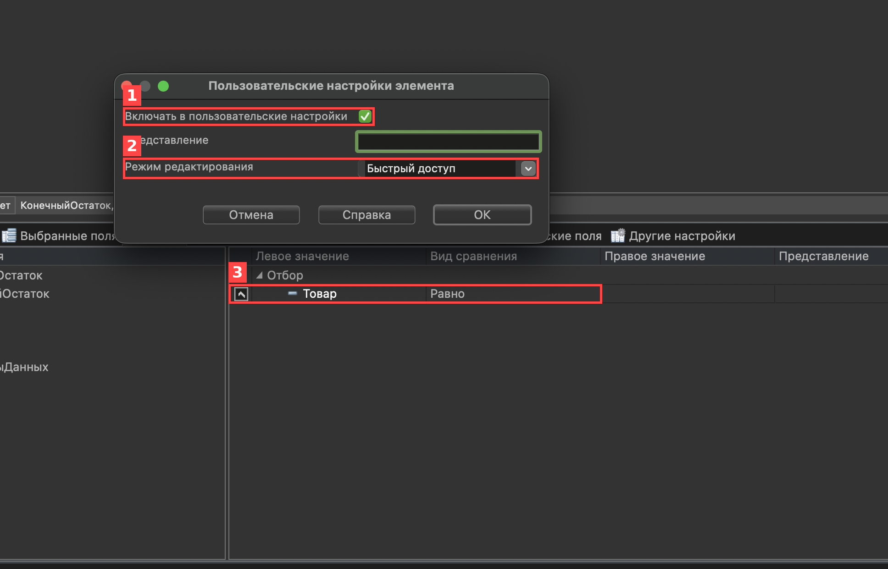
| № | Что это |
|---|---|
| 1 | Та же галка |
| 2 | «Быстрый доступ» |
| 3 | Строка отбора |
Из чего состоит отбор — как условие ГДЕ в запросе, только собранное мышкой:
| Часть | В нашем отборе | Аналог в запросе |
|---|---|---|
| Левое значение | Товар |
ГДЕ Товар |
| Вид сравнения | «Равно» | = |
| Правое значение | пусто — выберет пользователь | &Товар |
СКД сама допишет это условие в запрос, когда пользователь включит отбор.
Быстрый доступ или обычный. «Быстрый доступ» — поле прямо на форме отчёта. «Обычный» — только в окне «Настройки…». Частые вещи (период, организация) — в быстрый доступ, редкие — в обычный, чтобы не загромождать форму.
Шаг 7. Проверить в предприятии
Сохрани (Cmd + S), запусти предприятие, раздел «Главное» → отчёт.
3. Как это видит пользователь
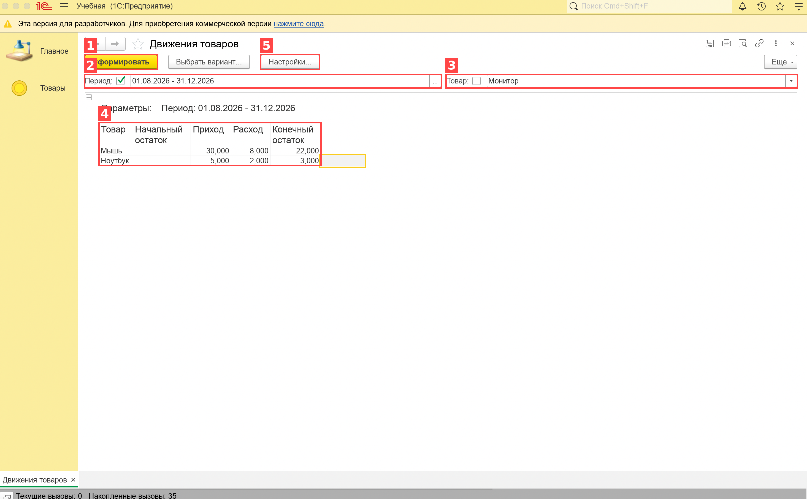
| № | Что это |
|---|---|
| 1 | «Сформировать» — запустить цепочку из раздела 1 |
| 2 | Период из пользовательских настроек |
| 3 | Отбор Товар. Галка выключена — отбор не работает, показываются все товары |
| 4 | Результат: колонки в порядке выбранных полей |
| 5 | «Настройки…» — все пользовательские настройки в одном окне |
Сравни с разделом 2: форму, поля и кнопку ты не делал — их построила платформа по схеме.
Почему нет «Монитора». ОстаткиИОбороты возвращает только товары, у которых за период был остаток или движения. У «Монитора» их нет — поэтому с отбором по нему отчёт пустой. Это не ошибка.
Почему нет строки «Итого». Для итогов нужны ресурсы — задача 4.2.
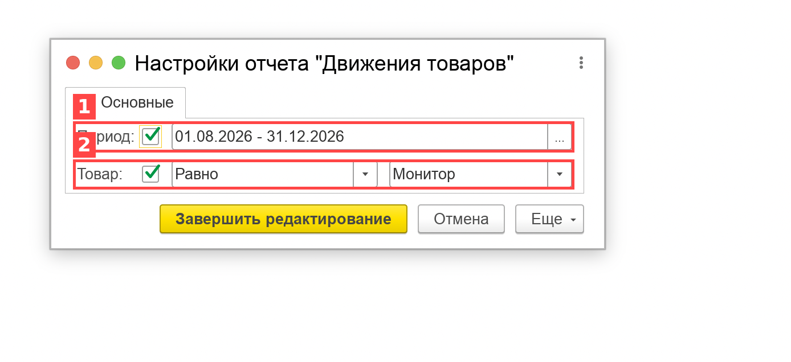
| № | Что это |
|---|---|
| 1 | Период |
| 2 | Отбор по товару: вид сравнения и значение |
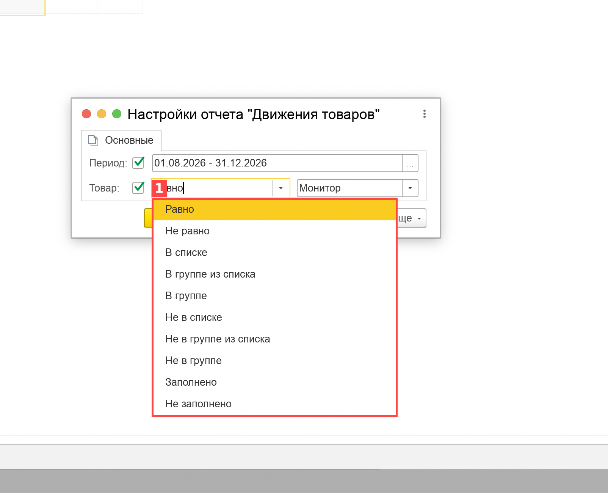
| № | Что это |
|---|---|
| 1 | Вид сравнения пользователь выбирает сам. Чаще всего нужны «Равно», «В списке», «Не в списке», «В группе» |
Ты сделал отбор «Равно», а пользователь может переключить на «В списке» и выбрать три товара. Тебе для этого ничего делать не нужно.
4. Ловушки
- Пустая структура. Симптом: в отчёте только шапка или вообще ничего. Причина: нет «Детальных записей» или пусты «Выбранные поля».
- Имя параметра не совпадает. Симптом: ошибка при формировании. Причина: в выражении
&Период.ДатаНачала, а параметр называетсяПараметр1. - Конец периода без времени. Симптом: движения последнего дня не попадают в отчёт. Причина: в параметр попала дата
31.12.2026 0:00:00. Стандартный период черезДатаОкончаниядаёт конец дня — поэтому используем его. - Период через отбор. Симптом: остатки не меняются при смене периода. Причина: отбор не меняет параметры виртуальной таблицы.
- Забыл пользовательские настройки или ограничение доступности. Симптом: на форме нет периода или, наоборот, видны лишние «Начало периода» и «Конец периода».
5. Практика А
Отчёт «Остатки на дату». Новый отчёт. Раздел 2 не открывай — только словарь и разделы 1, 4.
- Виртуальная таблица
ОстаткирегистраОстаткиТоваров: товар и количество. - Пользователь выбирает одну дату — параметр
ДатаОтчета, тип «Дата». - В виртуальную таблицу передай скрытый параметр с выражением
КонецПериода(&ДатаОтчета, "День"). Подумай, зачем конец дня, а не сама дата. - Отбор по товару в пользовательских настройках.
Готово, когда: выбираешь дату — видишь остатки на конец этого дня.
6. Практика Б
Отчёт «Продажи за период» по документу РасходТовара: товар, количество, сумма.
- Обычный запрос по табличной части
Товары, без виртуальной таблицы. - Период — условие
ГДЕ Ссылка.Дата МЕЖДУ &НачалоПериода И &КонецПериодаи общийПериоддля пользователя, как в шаге 3. - Отбор по товару в пользовательских настройках.
- Проверь: если продать «Мышь» двумя документами, сколько строк по ней будет в отчёте и почему.
7. Справочник
Типы наборов
| Тип | Когда |
|---|---|
| Запрос | Почти всегда |
| Объект | Данные готовит код, например таблица значений |
| Объединение | Несколько наборов складываются в один, как ОБЪЕДИНИТЬ ВСЕ |
Несколько наборов и связи — 👀
Второй набор, например цены, можно связать с первым по товару. Похоже на ЛЕВОЕ СОЕДИНЕНИЕ из задачи 3.2, только настраивается мышкой.
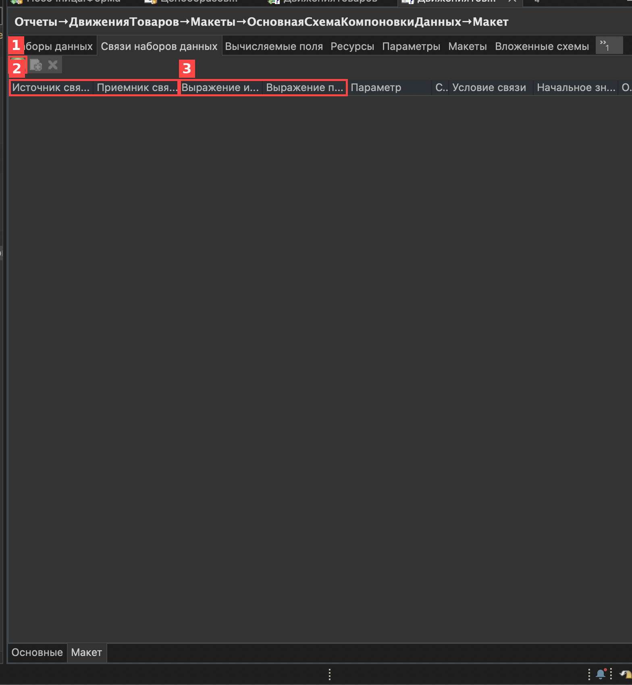
| № | Что это |
|---|---|
| 1 | Добавить связь |
| 2 | Источник — основной набор, приёмник — присоединяемый |
| 3 | Поля, по которым связываются, например Товар и Товар |
Остальные колонки параметра
| Колонка | Что делает |
|---|---|
| Доступен список значений | Можно выбрать несколько значений |
| Запрещать незаполненные значения | Без значения отчёт не сформируется |
| Включать в доступные поля | Параметр можно использовать в настройках как поле |